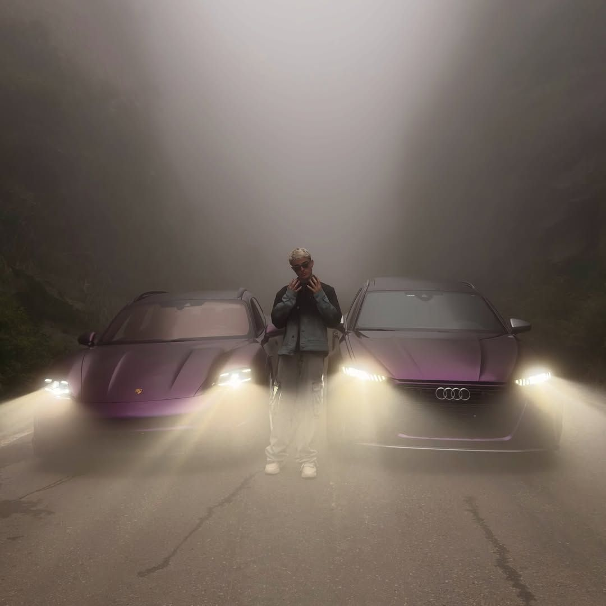

Lives de operação
Sessões ao vivo operando no mercado.
Aula gratuita
Material completo pra quem está começando.
Transparência
As operações são mostradas ao vivo no grupo.

Comunidade aberta
Mercado financeiro, todos os dias. Análises, lives e comunidade.
Sessões ao vivo operando no mercado.
Material completo pra quem está começando.
As operações são mostradas ao vivo no grupo.